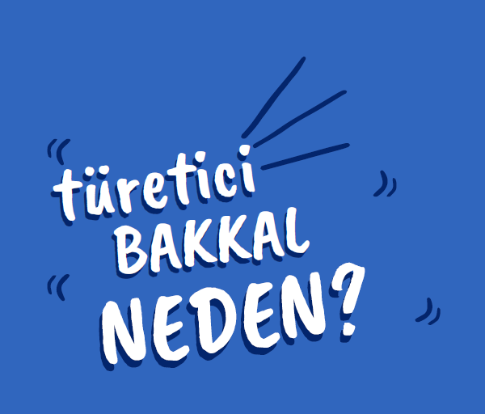

Hakkımızda

Türetici Bakkal, tüm ürünleri üreticiden aracı olmaksızın temin etmektedir.
Türetici Bakkal, küçük çaplı üretim yapan üreticiler ile dayanışma temelli bir tedarik süreci işletir.
Türetici Bakkal, üretici ile tüketicilerin iletişim içinde olmasını sağlayacak mekanizmaları geliştirirerek ürünlerin üretim süreçlerine dair tüketicilerin bilgi sahibi olmasını sağlar. Bu şekilde soframızda tükettiğimiz ürüne olan yabancılığımızın ortadan kalkacağına ve bizlerin de türeticiliğe ilk adımı atmış olacağını inanıyoruz.
Üretim ve tüketim ilişkilerinde toplumsal faydayı esas alan, doğa ile dost ve ekolojik bir yapıyı destekliyoruz. Ürün seçiminde ekolojik koşulları sağlayan üretim süreçlerinde kadın emeğininin değersizleştirilmediği, her türlü emek sömürüsünden uzak olarak üretilmiş ürünleri tercih ediyoruz. Bu açıdan emeğin ve doğanın savunulması, korunmasını ve doğanın ekolojik yapısına uygun yerel üretim ile sağlıklı ve nitelikli ürünlere herkesin erişebilmesini savunuyoruz.
Türetici Bakkal olarak asıl amacın kar olmadığını, dayanışma temelli bir sistem inşa etmeyi hedefliyor ve alternatif bir tüketim ağının kurulabilceğine inanıyoruz.